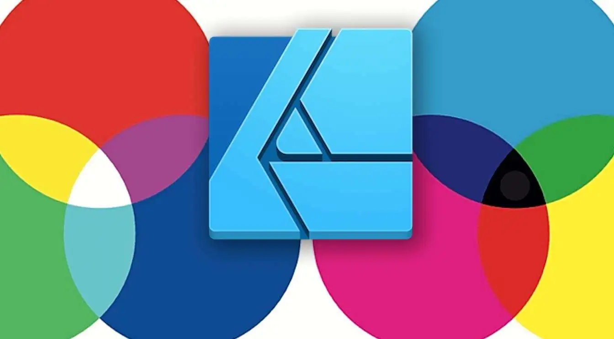
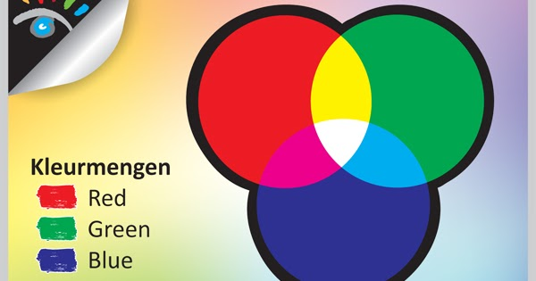
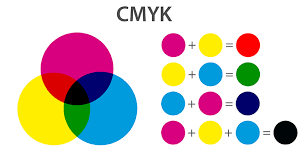

Op je computer wordt er van alles gecodeerd, ook kleuren dus. Je camera bestaat uit meerdere lenzen achter al die lenzen zit een beeldcensor die ook wel een ccd wordt genoemd en dan vraag je je natuurlijk af wat is een cdd nou? Een ccd is een afkorting voor charge-coupled device. Dit is een sensor dat bestaat uit wel miljoenen lichtgevoelige fotocellen, dus wanneer je een foto maakt met die camera dan wordt er eigenlijk een momentopname gemaakt van al het invalende licht van buitenaf. Dan hebben de sensoren van de camera de taak om het invallende licht om te zetten in een electrisch signaal. Kort gezegd, kleurmodellen zijn kleine systemen die er zijn om kleuren te beschrijven en weer te geven op bijvoorbeeld een scherm of bij het printen, zoals met het RGB of CMYK model.
Als je naar google gaat en iets opzoekt kun je naar google afbeeldingen gaan, wanneer je dan op zo'n afbeelding klinkt zie je eigenlijk gewoon een plaatje op het blote oog behalve als het echt van slechte kwaliteit is en je de pixels gewoon normaal ziet, maar wanneer je dus ver inzoomt op het plaatje dan ga je zien dat het bestaat uit allemaal kleine vierkantjes ofterwijl eenheden. De naam pixels is een samenvoeging van picture en element, picture is de afbeelding en het elemenet is het onderdeel van een klein stukje en samen is een pixel dus een klein onderdeel van een afbeelding. Kleurmodellen spelen een rol voor pixels dat beschrijft wat welke kleuren in pixels wordt gebruikt, elke pixel in een afbeelding heeft dus een kleur dat bepaald wordt door het kleurmodel.
Wanneer je ver inzoomd op een plaatje zie je allemaal pixels zoals ik al had verteld, maar nu gaan we
er nog wat dieper op in. Als je de pixels ziet wanneer er ingezoemt is kan je nog verder izoemen
waardoor je rode, groene en blauwe lampjes gaat zien. Elke pixel bestaat uit de drie lampjes, door die
drie lampjes helder of zwakker te laten branden kunnen er verschillende kleuren op je beeldscherm worden
weergegeven.
Een kleurmodel mengt kleuren om andere kleuren te maken net zoals met verf. Het RGB-model is gebaseerd
om de drie kleuren rood, groen en blauw dit zijn de basiskleuren voor de andere kleuren van het
model. Het RGB-model is gebaseerd op een zwart achtergrond, dus wanneer je je laptop of telefoon uitschakeld
dan zie je zwart, omdat de lampjes van de RGB-modellen van de pixels niet branden.
Het RGB-model is een manier om kleuren te maken met drie basis kleuren: Rood, Groen en Blauw. Elke kleur heeft een waarde van 0 tot 255. Door deze kleuren in verschillende hoeveelheden te mengen, kun je heel veel verschillende kleuren maken. Hier zijn een paar voorbeelden: Wit: (255, 255, 255)dit is als je alle kleuren op maximaal hebt. Zwart: (0, 0, 0)dit is helemaal geen kleur. Rood: (255, 0, 0)dit is 100% rood. Groen: (0, 255, 0)dit is 100% groen. Blauw: (0, 0, 255)dit is 100% blauw. Dus, als je deze nummers gebruikt, kun je bijna elke kleur maken die je maar wilt, het RGB-model wordt veel gebruikt op computers en in televisies om kleuren te laten zien. 
Het is niet handig dat het achtergrond zwart is als je iets wilt afdrukken. Het moet namelijk dan wit zijn. Hiervoor bestaat een speciaal kleurmodel genaamd het CMY-model. Bij het CMY-model is het achtergrond wit. In het CMY-model worden drie kleuren gebruikt: cyaan, magenta en geel. Dit kleurmodel is dus speciaal voor printen. Als je cyaan, magenta en geel samen mengt krijg je grijs. Als je zwart wilt hebben is dat niet handig. Daarom bestaat het CMYK-model. De K staat voor key of black 